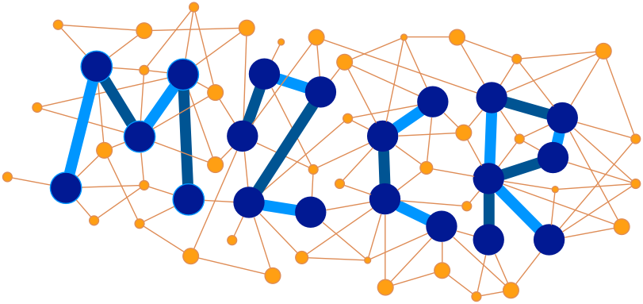
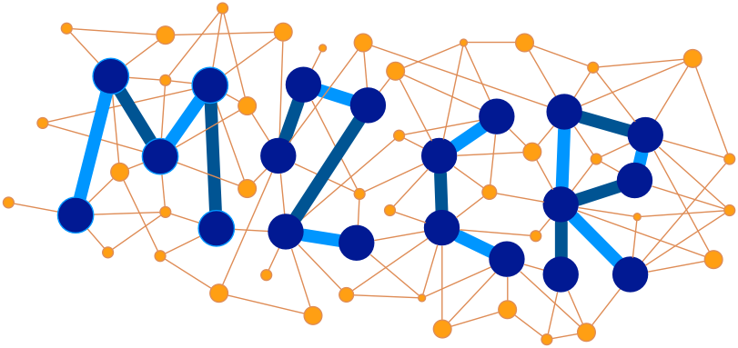

projects
This is shared task is aimed at the generation of image descriptions in a target language. The task can be addressed from two different perspectives:
We welcome participants focusing on either or both of these task variants.
| Release of training data | February 8, 2017 |
| Release of test data | April 10 2017 |
| Results submission deadline | May 6 2017 |
| Paper submission deadline | June 2 2017 |
| Notification of acceptance | June 30 2017 |
| Camera-ready deadline | July 14 2017 |
This task consists in translating English sentences that describe an image into German and/or French, given the English sentence itself and the image that it describes (or features from this image, if participants chose to). For this task, the Flickr30K Entities dataset was extended in the following way: for each image, one of the English descriptions was selected and manually translated into German and French by professional translators.
As training and development data, we provide 29,000, and 1,014 triples respectively, each containing an English source sentence, its German and French human translations and corresponding image. We also provide the 2016 test set, which people can use for validation/evaluation. The English-German datasets are the same as those in 2016, but we note that human translations in the 2016 validation and test datasets have been post-edited (by humans) using the images to make sure the target descriptions are faithful to these images. There were cases where in the 2016 the source text was ambiguous and the image was used to solve the ambiguities. The French translations were added in 2017.
As test data, we provide a new set of 1,000 tuples containing an English description and its corresponding image. Gold labels will be translations in German or French.
Evaluation will be performed against the German or French human translations of the test set using standard MT evaluation metrics, with METEOR as the primary metric (lowercased text, with punctuation, tokenised). We recommend normalising punctuation and tokenising the system submissions using these scripts. They will be used for the reference translations too. Each language will be evaluated independently.
The baselines for this task will be neural MT systems trained using only the textual training data provided and the Nematus tool (details later).
This task consists in generating a German sentence that describes an image, given only the image for unseen data. For this task, the Flickr30K dataset was extended in the following way: for each image, five German descriptions were crowdsourced independently from their English versions, and independently from each other. Any English-German pair of descriptions for a given image could be considered a comparable translation pair. We will provide the images and associated descriptions for training, while smaller portions will be used for development and test.
As training and development data, we provide 29,000 and 1,014 images, each with 5 descriptions in English and 5 descriptions in German, i.e., 29,014 tuples containing an image and 10 descriptions, 5 in each language. We also provide the 2016 test set, which people can use for validation/evaluation.
As test data, we provide a new set of approximately 1,000 images without any English descriptions.
Evaluation will be performed against five German descriptions collected as reference on the test set, with lowercased text and without punctuation, using METEOR. We may also include manual evaluation.
The baseline for this task will be the image description model by Xu et al. (2015) trained over only the German target language data.
Task 1: Training, Validation, and 2016 Test sentences, and the splits.
Task 2: Training and Validation, and 2016 Test sentences, and the splits.
New: we will release a new test dataset of 1,000 images for each task on April 10th 2017. Note that submissions will only be evaluated against the Test 2017 data.
| Training | Validation | Test 2016 | Test 2017 | |||||
|---|---|---|---|---|---|---|---|---|
| Images | Sentences | Images | Sentences | Images | Sentences | Images | Sentences | |
| Task 1 | 29,000 | 29,000 | 1,014 | 1,014 | 1,000 | 1,000 | 1,000 | 1,000 |
| Task 2 | 145,000 | 5,070 | 5,000 | 5,000 | ||||
Image features will be provided to participants, but their use is not mandatory. In particular, we will release features extracted from the VGG-19 CNN, described in (Simonyan and Zisserman, 2015) from the FC7 (relu7) and CONV5_4 layers using Caffe RC2.
If you use the dataset created for this shared task, please cite the following paper: Multi30K: Multilingual English-German Image Descriptions.
@article{elliott-EtAl:2016:VL16,
author = {{Elliott}, D. and {Frank}, S. and {Sima'an}, K. and {Specia}, L.},
title = {Multi30K: Multilingual English-German Image Descriptions},
booktitle = {Proceedings of the 5th Workshop on Vision and Language},
year = {2016},
pages = {70--74},
year = 2016
}
We suggest the following interesting resources that can be used as additional training data for either or both tasks:
You are encouraged to submit a short report (4 to 6 pages) to WMT describing your method(s). You are not required to submit a paper if you do not want to. In that case, we ask you to provide a summary and/or an appropriate reference describing your method(s) that we can cite in the WMT overview paper.
Each participating team can submit at most 2 systems for each of the task variants (so up to 4 submissions). These should be sent via email to Lucia Specia lspecia@gmail.com. Please use the following pattern to name your files:
INSTITUTION-NAME_TASK-NAME_METHOD-NAME_TYPE, where:
INSTITUTION-NAME is an acronym/short name for your institution, e.g. SHEF
TASK-NAME is one of the following: 1 (translation), 2 (description), 3 (both).
METHOD-NAME is an identifier for your method in case you have multiple methods for the same task, e.g. 2_NeuralTranslation, 2_Moses
TYPE is either C or U, where C indicates "constrained", i.e. using only the resources provided by the task organisers, and U indicates "unconstrained".
For instance, a constrained submission from team SHEF for task 2 using method "Moses" could be named SHEF_2_Moses_C.
The output of your system a given task should produce a target language description for each image formatted in the following way:
<METHOD NAME> <IMAGE ID> <DESCRIPTION> <TASK> <TYPE>Where:
METHOD NAME is the name of your method.IMAGE ID is the identifier of the test image.DESCRIPTION is the output generated by your system (either a translation or an independently generated description). TASK is one of the following flags: 1 (for translation task), 2 (for image description task), 3 (for both). The choice here will indicate how your descriptions will be evaluated. Option 3 means they will be evaluated both as a translation task and as an image description task.TYPE is either C or U, where C indicates "constrained", i.e. using only the resources provided by the task organisers, and U indicates "unconstrained".For questions or comments, email Lucia Specia lspecia@gmail.com.
Supported by the European Commission under the
MultiMT  and M2CR 
and M2CR 
projects